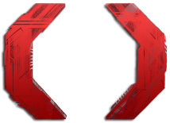

The name Celldweller was derived from a nickname his mother gave him when he was a teenager, dubbed "Cellar Dweller", as he made all of his music in his parents' basement. Klayton had gained a devoted cult following in the mid 90s because of his industrial metal band Circle of Dust. After the dissolution of Circle of Dust, Klayton concurrently released both a posthumous collection of reworked Circle of Dust leftovers titled Disengage and an album for a new project, Angeldust, created in conjunction with illusionist Criss Angel. Both albums demonstrated Klayton's shift away from industrial metal and towards more electronic-modern industrial rock influences, incorporating richer electronic instrumentation and greater emphasis on melody. This change in style was a major step toward the sound that would come to define Celldweller's output. Klayton began creating songs for the Celldweller project in 1998/1999 and released a limited edition EP of three early Celldweller demos and two solo trance tracks, which quickly sold out. Klayton and Chriss Angel parted ways in May of 2000 after three albums' worth of material had been completed, allowing Klayton to devote all of his time to Celldweller.
Klayton worked in earnest with producer Grant Mohrman (formerly of Leaderdogs for the Blind and Full on the Mouth) on the debut Celldweller album, which was slated for release in February 2001. Unfortunately, various delays kept pushing the release date back. During this time, Klayton kept fans up to date with numerous Celldweller Logs through his website and via email and, in 2001, released raw files of the song "Symbiont" to give fans and fellow musicians a chance to remix Celldweller's music. Eight remixes were chosen and uploaded to the original Mp3.com, most of them making it to the top of the Electronic and the Electro-Industrial charts. All the exposure led to over 500,000 song plays on Mp3.com. The "Symbiont" remixes became a digital EP six years later.
The self-titled debut album saw release in early 2003 and debuted at No. 17 on Billboard's Internet Sales Chart. Celldweller included a guest appearance by Taproot drummer Jarrod Montague. In 2004, the album took home seven awards at the Just Plain Folks Music Awards, winning Album of the Year, Producer of the Year, Industrial Album of the Year, Metal Song of the Year ("One Good Reason") and Best Industrial Rock Song ("Switchback"), and also took runner-up in Best Industrial Song with "Stay with Me (Unlikely)" and Best Rock Song with "I Believe You".
In December 2008, Klayton released Soundtrack for the Voices in My Head Vol. 01, a collection consisting primarily of short, instrumental score-based compositions. He selected and reworked demos from his extensive archives that he felt would suit for film, TV and video game licensing.Additionally, some songs were from the (then work in progress) second main Celldweller album sessions. Celldweller's management has sought to have these songs placed in media, like those on the debut album, and several have already been heard on film and television and in video games.
Albums:
Studio Albums:
- Celldweller (2003)
- Wish Upon a Blackstar (2012)
- End of an Empire (2015)
- Offworld (2017)
- Satellites (2022)
Soundtrack for the Voices in My Head volumes:
- Soundtrack for the Voices in My Head Vol. 01 (2008)
- Soundtrack for the Voices in My Head Vol. 02 (2010-2012)
- Soundtrack for the Voices in My Head Vol. 03 (2013-2016)
